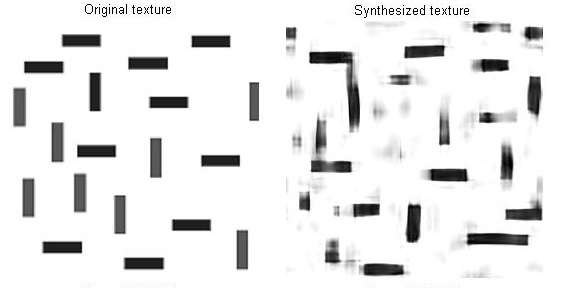
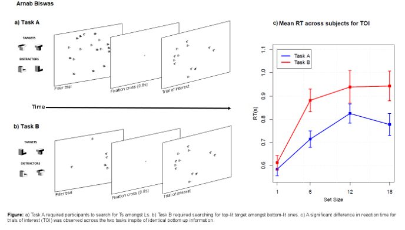
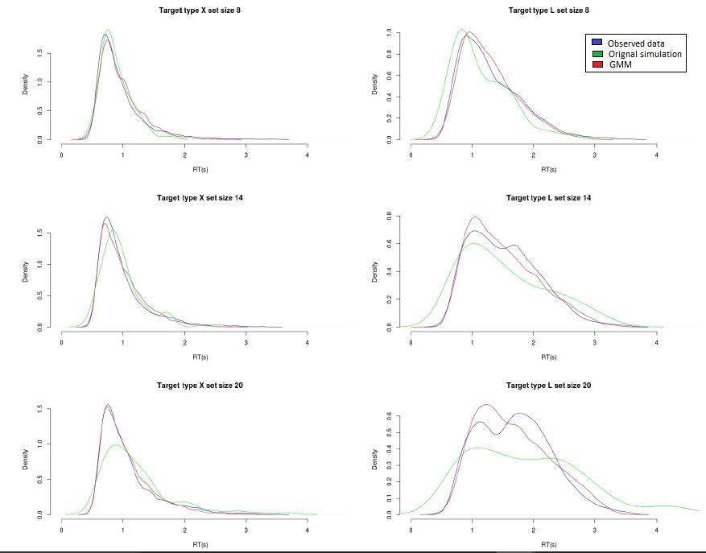
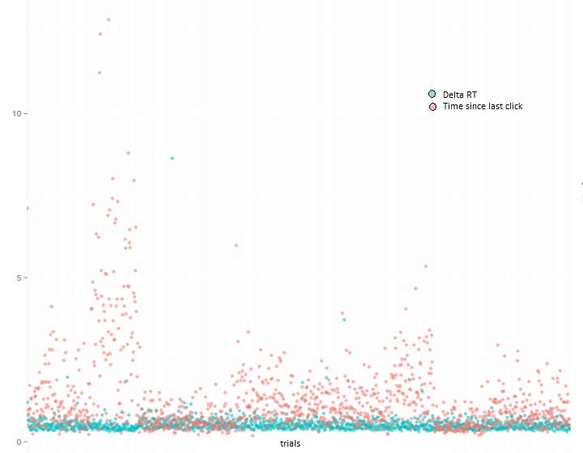

- Role of peripheral vision in visual search
Mentor: Dr. Devpriya Kumar, Center for Cognitive Science, IIT Kanpur, India
Currently investigating the role of peripheral vision in explaining various illusions and predicting performance in visual search experiments using texture synthesis algorithm in Portilla, Simoncelli 1999.
Synthesised using Portilla, Simoncelli 1999.
- Isolating top-down processes in visual search
Mentor: Dr. Devpriya Kumar, Center for Conitive Science, IIT Kanpur, India
Devised a paradigm to look at the contribution of top-down processes on visual search performance, independent of bottom-up processes. Modelled the collected reaction time distributions to show that subjects followed different search strategies for different tasks having the same bottom up simuli. To be presented at OPAM 2017.
- Introspection during visual search
Mentor:Dr. Jérôme Sackur, LSCP, Associate professor, Psychology,
Department of Cognitive Studies, Ecole Normale Sup erieure, Paris, France
Implemented Moran et.al, JOV 2013 a Bayesian model of response time data collected from two types of stereotype search tasks a conjunction and a feature search. Identified and removed shortcomings in the model by implementing a Gaussian Mixture Model and showing that target saliency varies with set size in conjunction search. Incorporated an additional latent variable in the model to predict the subjective response of participants. Further analysed the data to show that female participants assumed that they had searched for more number of items than they had actually in case the task was a conjunction search.
Better fit observed using the improved model
- Multi-target conjunction foraging search in humans
Mentor: Prof. Jeremy Wolfe, Professor of Ophthalmology & Radiology,
Harvard Medical School, Brigham & Womens hospital, Boston, MA, U.S.A.
Implemented two models of hybrid foraging visual search tasks in humans, a deterministic model based on the Marginal Value Theorem (Charnov. 1976) and a stochastic model based on Marshall et al. 2013 which used a moving prior to show how the threshold for leaving the search scene changes with difference in previously completed trials(based on the informed hierarchical prior) and current search scene.
Foraging behavior seen across trials
- Teaching children with Down Syndrome to read
Mentor: Dr. Nitin Gupta, Assistant Professor, Dept. of Bioengineering, IIT Kanpur
Devised A strategy to overcome language learning deficiency in children with Down syndrome which rerouted the path of language acquisition from the verbal to the visuo-spatial working memory. Also tailoring of working memory training and vocabulary building activities based on systematic introduction to phonetically and semantically similar words. Language acquisition of Deaf since birth children who are later given cochlear implants was also studied to see if similar difficulties arise.
 hide forever |
hide once
hide forever |
hide once